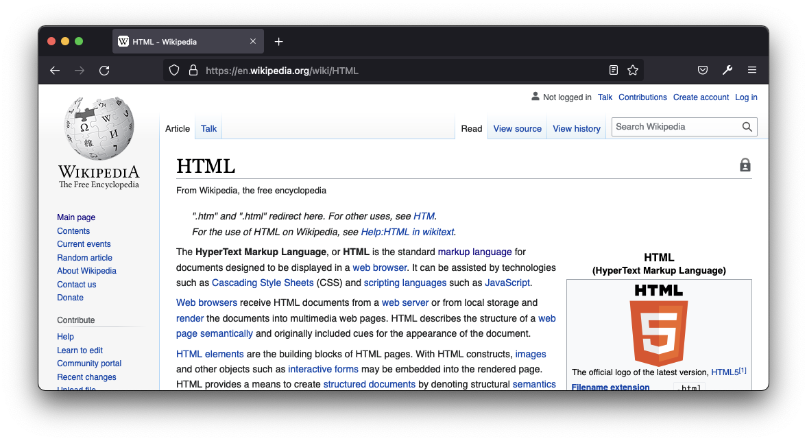

Ruby Monstas
HTML
HTML
Stands for HyperText Markup Language
😓
HyperTexT
Hypertext is text [...] with references to other text that the reader can immediately access.
In the web we call those references "hyperlinks". 💡
Markup Language
A system to format and structure text.
🤨
And now let's discover what THAT means...
Webpages
Have you ever wondered how webpages are built?
Tags <everywhere>
In HTML every content is wrapped in so called "tags".
<p>This should be <u>underlined</u></p>Anatomy of a tag
Normally we have an opening tag, some content and a closing tag:
<p>This is a simple paragraph</p><p>is the opening tag for a paragraph"This is a simple paragraph"is the content</p>is the closing tag for the paragraph
Nesting
Many tags can be nested.
We have seen that before!
<p>
This should be <b>bold</b>,
and that is
<b><i>bold and italic at the same time!</i></b>
</p>HTML tags
HTML has many predefined tags, like the ones we've seen so far
<p>for paragraphs<b>for bold text<i>for italic text
A complete list of tags can be explored here:
https://www.w3schools.com/Tags/default.asp
Semantics
In HTML every tag has its purpose and often gives its content some semantics.
Semantics?
Example of a book:<h1>Confident Ruby</h1>
<h2>Foreword</h2>
<h2>Preface</h2>
<h2>Introduction</h2>
<h3>Ruby meets the real world</h3>
<h3>Confident code</h3>
<h2>Performing work</h2>Limitations
In HTML we should only use the tags that are predefined.
We could create our own tags, but the browser wouldn't know how to interpret and display them correctly.
What questions do you have?